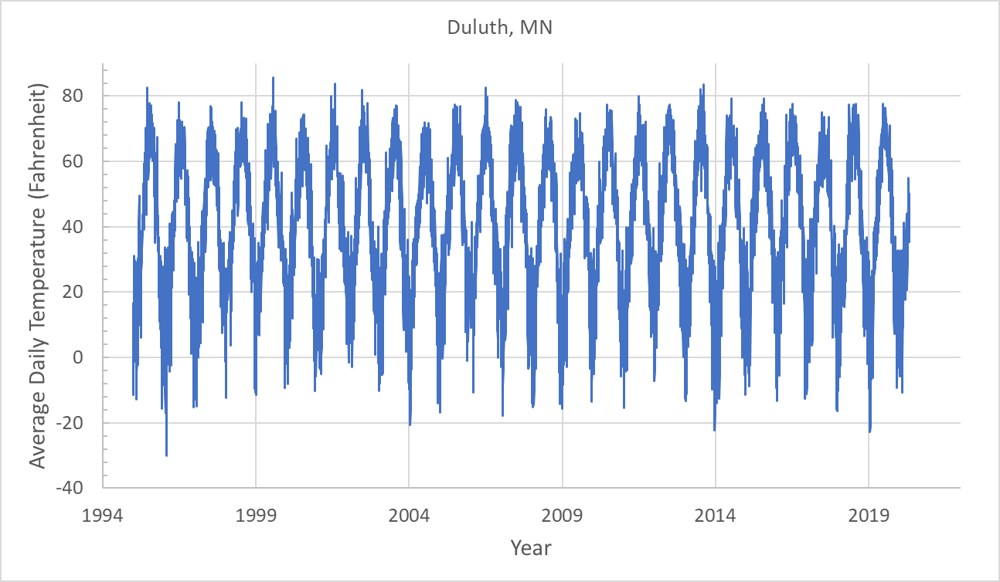
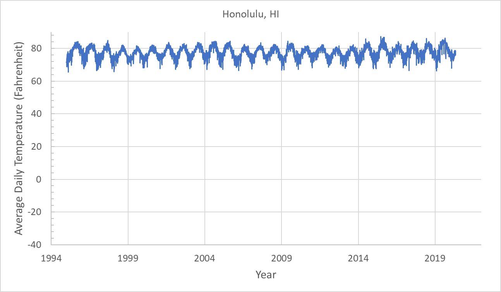
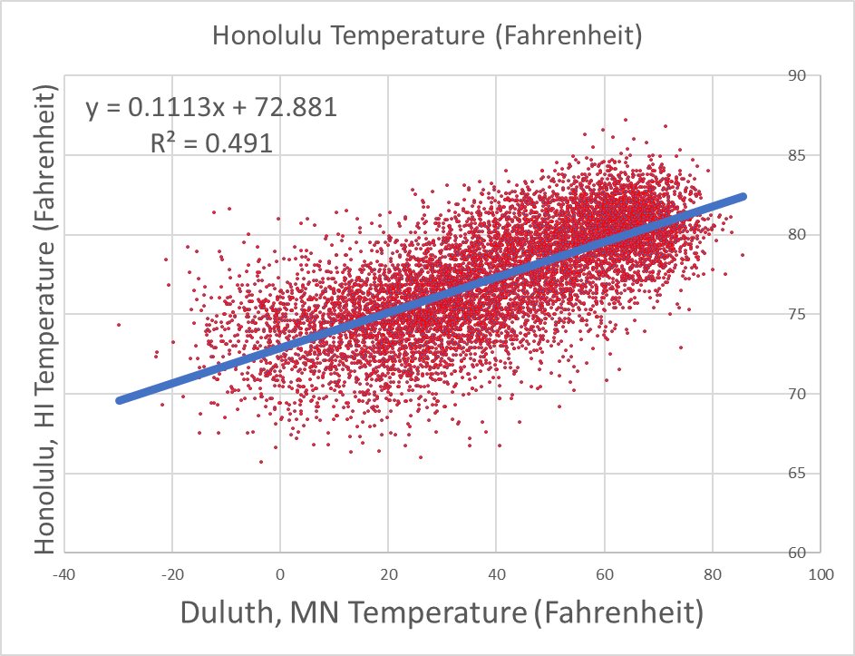

Consider the following Excel dataset containing the temperature of two US cities Honolulu, HI and Duluth, MN from 1995 to 2020. There are two pages in the Excel file: Duluth, and Honolulu. Each row in the file corresponds to the average temperature (in Fahrenheit) of a city in a given day of the year. Each observation has the following attributes: “Year,AverageTemperature”.
Make a visualization of the data corresponding to these two city temperatures over the years similar to the following plots.


Use Excel’s AVERAGE command to compute the average temperatures of the two cities over the years. Which one is hotter?
Which city has less fluctuating temperatures across days of the year? Prove this by computing the standard deviations of temperatures over all the years for each city. Recall that the standard deviation measures the amount of dispersion of data around the data mean. You can use Excel’s STDEV function to compute the standard deviation of a column of data.
Now, perform a linear regression on the temperature data for both cities in Excel and report the linear equation and the slope of the line that you find.
How do the temperatures of these two cities correlate with each other? Hint: To answer this question, make a plot of the temperatures of the two cities against each other like the following graph. Then use the TRENDLINE tools of the graph to obtain a linear fit to the data points. Then, add the equation and the $R^2$ value to the plot. The square-root of $R^2$, that is, $R$, is the amount of correlation between the temperatures of two cities during all years.

Is this correlation positive or negative? What does this imply about the geographical locations of the two cities on Earth? Hint: Think about the effects of geographical latitude on temperature.
What do you think the temperatures of Duluth, MN and Sydney, Australia should be correlated? Positively or negatively? Why?